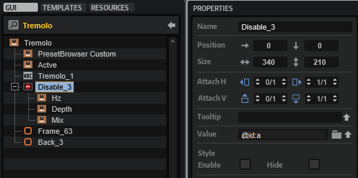

/ HALion Developer Resource / HALion Tutorials & Guidelines / Tutorials /
Creating an FX Rack
On this page:
- Example VST Preset
- Prerequisites
- Workflow Overview
- Adjusting the Number of Slots
- Adding Further Effects
- Final Example VST Preset
- How the Elements Interact
- Transferring the FX Rack to Your Instrument
- FX Rack with Custom Look
This tutorial describes how to create an FX Rack using a Template List. The FX Rack provides several slots for loading effects using a Custom Multi Level Menu. Furthermore, you can rearrange effects via drag and drop. Subpresets for each effect are managed using the Preset Browser Custom template.

❕ For an example of an FX Chain instead of an FX Rack, see Creating an FX Chain.
Example VST Preset
The FX Rack in this example uses both UI and MIDI script functionality. The corresponding scripts are provided, but not explained in detail line by line. Instead, the connections and interactions between the UI elements and the UI and MIDI scripts are explained so that you can adjust the number of slots and customize the look of the FX Rack without the risk of introducing errors. See How the Elements Interact.
The following section describes how to access Templates and edit UI and MIDI scripts.
To explore the templates in this example:
- Open the Macro Page Designer, go to the Templates Tree and select the template that you want to explore.
- Click Edit Element
 to examine the template.
to examine the template.
To edit the UI script:
- Open the Macro Page Designer and select the topmost element in the GUI Tree.
- Go to the Properties section and click Edit Script to open the internal script editor.
To edit the MIDI script:
- In the Program Tree, select the FX Rack MIDI Module.
- Go to the Sound editor and click Edit Script to open the internal script editor.
The instructions that follow use the internal script editor.
Prerequisites
- You have an instrument with a macro page.
- You have loaded both the preset Creating an FX Rack 01.vstpreset and your instrument into HALion.
Workflow Overview
- Adjust the number of slots in the UI script.
- Add further effects to the UI and MIDI scripts and create templates for them.
- Copy the bus and effects from the Example VST Preset to your instrument.
- Copy the templates and resources from the Example VST Preset to your macro page.
- Copy the code of the UI and MIDI scripts from the Example VST Preset into the corresponding scripts of your instrument.
- Change the look of the FX Rack to match the look of your instrument.
Adjusting the Number of Slots
The FX Rack in the Example VST Preset has four slots. You can adjust the number of slots in the FX Rack by setting the numFxSlots variable in the UI script to the desired value.
Let's increase the number of slots from four to five:
- In the Macro Page Designer, open the UI script in the internal script editor.
- Set the
numFxSlotsvariable to 5.
-- FX Rack and effects UI
numFxSlots = 5
- Update the UI, for example, by selecting a different program and then returning to the Example VST Preset. This will rebuild the macro page and apply your changes.
The FX Rack should now have five slots on the macro page and in the Program Tree structure.
Adding Further Effects
To add additional effects, you need to edit the UI and MIDI scripts, as well as modify and create the relevant Templates. Let's add "Tremolo" to the selection of available effects.
Editing the UI Script
- In the Macro Page Designer, open the UI script in the internal script editor.
- In the
fxDatatable, between"Phaser"and"Distortion", insert"Tremolo"as Name, and"a"as Bypass ID:
fxData = {
-- Name Bypass ID(hex)
{ "None", "0" },
{ "Chorus", "e" },
{ "Flanger", "e" },
{ "Phaser", "12" },
{ "Tremolo", "a" }, -- Add this line.
{ "Distortion", "14" },
{ "Bit Crusher", "14" },
{ "Delay", "16" },
{ "Reverb", "13" },
}
The ID of the bypass parameter differs depending on the type of effect. You can look up the ID in hex format in the Program List, for example. This information is important when adding other types of effects.
Editing the MIDI Script
- In the Program Tree, select the FX Rack MIDI Module and the internal script editor.
- Add the following information to the
effectDefaultstable.
Tremolo = {
output = 0,
rate = 0.7979797979798,
syncnote = 0,
depth = 0.75,
phase = 1,
temposync = 0,
},
The code example above lists only the lines of code that need to be added to the effectDefaults table. The table lists the available effects and their parameters with names and defaults. The normalized range from 0 to 1 is used for the defaults. The defaults will be used when loading an effect.
❕ For a code example on how to write effects and their settings to a table, see Snapshot Effects.
Modifying the Effect Selector
The Select Effect menu is hierarchical. It has submenus for Modulation, Distortion, and Time. Each submenu has its own Template. First, you need to add the 'Tremolo' menu entry to the Modulation submenu. Then you must increase the OnValues of the subsequent effects in the other submenus by one to match the indices of the arrays and Indexed String Array parameters in the UI script.
- In the Macro Page Designer, go to the Templates Tree and navigate to'library/FX Rack/PopUps/FX Type/M_FX Type Mod'.
- Edit the 'M_FX Type Mod' template.
- In the GUI Tree copy and paste one of the existing Templates, e.g. the 'Phaser' template.
- Set the Properties of the new 'Tremolo' template as follows:

| Property | Value |
|---|---|
| Name | Tremolo |
| Position X | 1 |
| Position Y | 58 |
| Text | Tremolo |
| OnValue | 4 |
- Now, edit the 'M_FX Type Dist' and 'M_FX Type Time' templates.
- Set the OnValue of the the subsequent effects as follows:
| Template | Property | Value |
|---|---|---|
| Distortion | OnValue | 5 |
| Bit Crusher | OnValue | 6 |
| Delay | OnValue | 7 |
| Reverb | OnValue | 8 |
Creating a Template for the FX
The Tremolo effect needs an FX panel. Let's create one by reusing an existing effect template.
- In the Templates Tree, go to 'library/FX Rack/FX/Effects'.
- Copy and paste an existing effect template to the 'Effects' folder. You can copy any effect template except the 'None' template.
- Rename the new template to 'Tremolo' and click Edit Element .
- Adjust the Properties of the controls and templates as described below.

Knob Templates
The knob templates are inside the Disable control. The knobs can be configured with template parameters.
- Set the Template Parameters as follows:

Knob Template HZ
| Template Parameter | Value |
|---|---|
| Value | @id:0 |
| Label | RATE |
| Unit | Hz |
Knob Template Depth
| Template Parameter | Value |
|---|---|
| Value | @id:1 |
| Label | DEPTH |
Knob Template Mix
| Template Parameter | Value |
|---|---|
| Value | @id:2 |
| Label | OUTPUT |
| Unit | dB |
Now, the knobs control the effect parameters and display the corresponding parameter names and units.
Active Template
The ID of the Bypass parameter must be set.
- Set the Template Parameter of the 'Active' template as follows:

| Template Parameter | Value |
|---|---|
| Value | @id:a |
Disable Group
The value of the Disable group must be set to the same ID as the associated Bypass parameter. The three knobs will be disabled if the effect is bypassed.

| Property | Value |
|---|---|
| Value | @id:a |
Label Control
The title of the effect must be changed.
- Set the Properties of the Label control as follows:
| Property | Value |
|---|---|
| Name | Tremolo_1 |
| Text | TREMOLO |
Preset Browser Template
The Preset Browser FX Rack template provides the subpreset management for each effect. It can be configured with template parameters.
- Set the Template Parameters as follows:

| Template Parameters | Value |
|---|---|
| Product | FX Rack |
| Category | FX/Tremolo |
This way, the Tremolo effect will load and save subpresets from its own location.
❕ The Preset Browser FX Rack template differs from the Preset Browser Custom template. The main difference is that it omits the Mix parameter when loading an FX subpreset. To keep this functionality, you must use the template from this example instead of the Preset Browser Custom template.
- Finally, update the UI by selecting a different program and then selecting the Example VST Preset again. This will rebuild the macro page and apply your changes.
To add more effects, repeat the steps described above, starting with Adding Further Effects, and adjust the values to match the particular effect.
Final Example VST Preset

Here, you can find the Example VST Preset with all the editing steps applied.
How the Elements Interact
The UI script plays a central role in the FX Rack and controls most of its actions. The comments in the UI script explain which UI elements are connected to script parameters and why they are needed. Reading the comments and looking at the associated UI elements will help you to understand how the FX Rack works. The following screenshot shows the Insert Rack template with its Template Parameters linked to the parameters of the UI script. These script parameters control how the insert rack is displayed on the macro page.

The UI script also contains print functions that are commented out. The print functions can be used to track the function calls.
- Go to the Macro Page Designer.
- Open the UI script in the internal script editor and remove the comments
--before each print function. - To monitor the UI script's output messages, click Show/Hide Script Output Messages
 .
. - Activate Test Macro Page
 .
. - Operate the FX Rack in the Macro Page Designer (not the Macro Page Editor).
❕ You must operate the FX Rack in the Macro Page Designer, otherwise the output messages will not be correct.
Below follows a brief description of the connections and the message exchange within the FX Rack.
FX Handling
- When an effect is loaded into a slot, the UI script's
"LoadInserts"..iparameter is changed and theonSelectFXfunction is called. - The UI script's
onSelectFXfunction sets the MIDI script'sselectFxparameter. This calls theonSelectFxfunction in the MIDI script, which loads the effect on the bus. - After the MIDI script's
onSelectFxfunction has loaded the effect, thesendUpdateBusparameter is set. The MIDI script'ssendUpdateBusparameter is connected to the UI script'supdateBusparameter. - When the UI script's
updateBusparameter is changed, theonBusChangedfunction is called and the associated parameters and templates of the FX Rack are updated. - After the UI script's
onBusChangedfunction has updated the FX Rack, theonShowInsertChangedfunction is called. TheonShowInsertChangedfunction sets the scope and the template for the effect panel.
FX Drag and Drop Handling
- When an effect is dragged and dropped to a new position in the FX Rack, the UI script's
onTemplateListDropfunction is called. - The UI script's
onTemplateListDropfunction sets the MIDI script'smoveFxparameter. This calls the MIDI script'sonMoveFxfunction, which repositions the effect on the bus. - After the
onMoveFxfunction has moved the effect, thesendUpdateBusparameter is set. The MIDI script'ssendUpdateBusparameter is connected to the UI script'supdateBusparameter.
All other steps are the same as in the FX Handling section, starting with step four.
Transferring the FX Rack to Your Instrument
To integrate the FX Rack into your macro page, you need to do the following:
- Copy the bus and effects in the Program Tree. The Program structure of your instrument must match the structure of the Example VST Preset and your macro page must be attached to the topmost element in the Program Tree.

- Copy all Templates. The Templates in the Example VST Preset use Resources from the Basic Controls and Vector Controls library. Later, you can change the Resources to match the look of your instrument.

- Copy the Templates from the GUI Tree to your macro page.

- Copy the code from the UI and MIDI scripts to the respective scripts of your instrument.
- Connect the MIDI script's
sendUpdateBusparameter with the UI script'supdateBusparameter.

❕ The FX Rack will only work if this connection exists.
- Finally, update the UI, for example, by selecting a different program and then selecting your instrument again. This will rebuild the macro page and apply your changes.
FX Rack with Custom Look
You can customize the look and feel of your instrument entirely by using your own Resources. As an example, the FX rack of FM Lab is shown in the following screenshot.